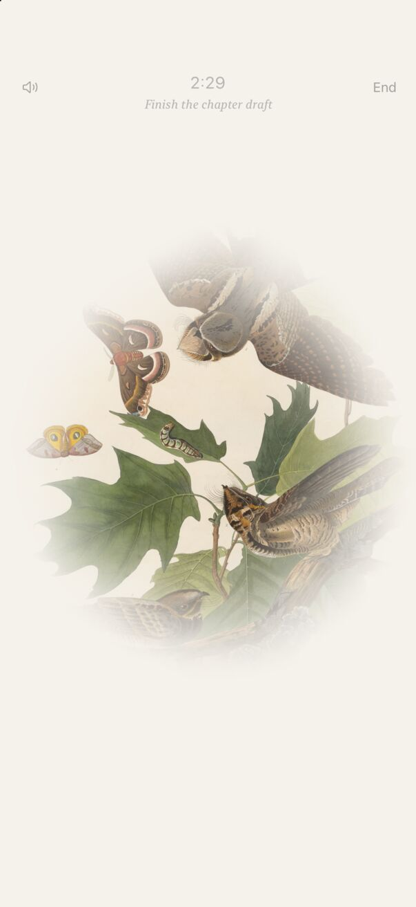

홈 화면
모든 것은 고요한 한 화면에서 시작돼요. 위에서부터 차례로:
- 갤러리(왼쪽 위): 지금까지 드러낸 작품들.
- 설정(오른쪽 위): 화면 모드, 사운드, 알림, 위젯의 하루 목표 등.
- 무엇에 집중할까요? 지금 하는 일을 적는 선택 사항 입력란.
- 단일 또는 뽀모도로: 한 번의 세션, 또는 짧은 휴식이 있는 집중 블록 네 개.
- 집중 시간: 5, 15, 25, 45, 60분, 또는 5분부터 120분까지 정하는 직접 설정.
- 함께할 작품: 어떤 작품 중에서 고를지. 모든 작품을 고르면 매번 새로운 놀라움이 있어요.
- 시작.


첫 세션
- 시간을 고르세요. 처음에는 25분이 좋아요. 직접 설정을 탭하면 휠에서 5분부터 120분까지 원하는 시간을 고를 수 있어요.
- 무엇을 위한 시간인지 적어 보세요(선택 사항). 맨 위 입력란에 적거나, 비워 두면 시작을 탭할 때 Easel이 “무엇에 집중할까요?”라고 물어봐요. 집중 질문을 참고하세요.
- 시작을 탭하세요. Easel이 그림을 고르고 세션이 시작되기 전에 완전히 불러오므로, 인터넷 연결 때문에 공개가 멈추는 일이 없어요.
- 일하세요. 시간이 지날수록 그림이 가운데부터 바깥으로 드러나요. 타이머는 맨 위에 조용히 있으니 계속 볼 필요는 없어요.
- 0:00에 그림이 완전히 공개돼요. 화면 아래에서 크림색 미술관 명판이 올라오며 집중한 시간, 목표, 작품 제목, 작가, 연도를 보여 줘요. 완료를 탭하면 그림이 갤러리에 걸려요.


다음으로 볼 가이드
- 집중 세션과 안개 속 공개: iPhone 잠그기, 일찍 종료하기, 사운드.
- 뽀모도로: 휴식이 있는 네 개의 블록, 매번 새로운 그림.
- 나의 갤러리: 미술관 레이블과 함께 보는, 지금까지 얻은 모든 그림.
앱에서 길을 잃었나요?
Easel의 모든 화면에는 돌아가는 길이 있어요. 왼쪽 위의 ‹ 뒤로 버튼, 통계의 ⌄ 버튼, 또는 시트를 아래로 쓸어내리면 돼요. 언제나 홈 화면으로 돌아와요. 자세한 내용은 문제 해결에 있어요.